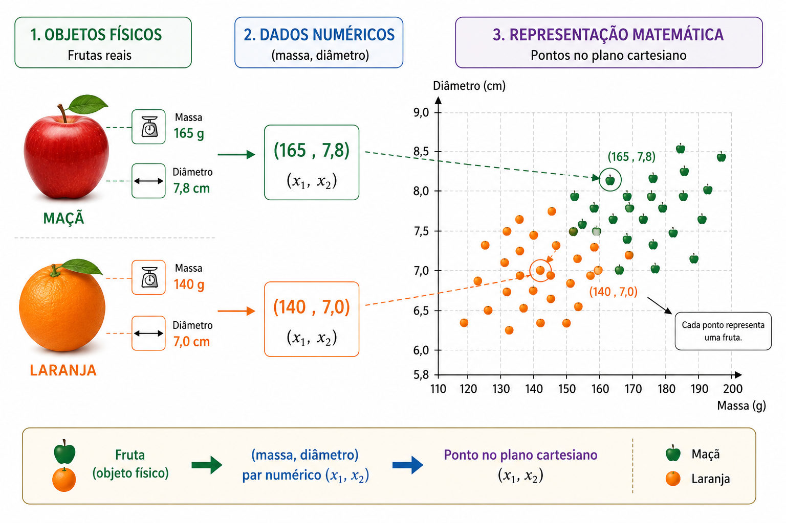
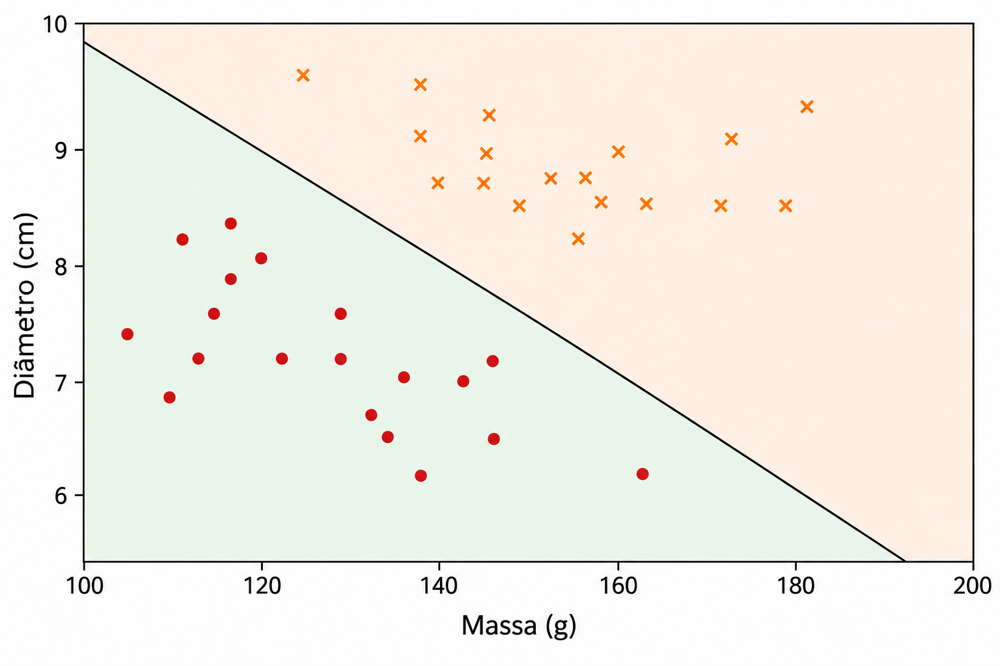
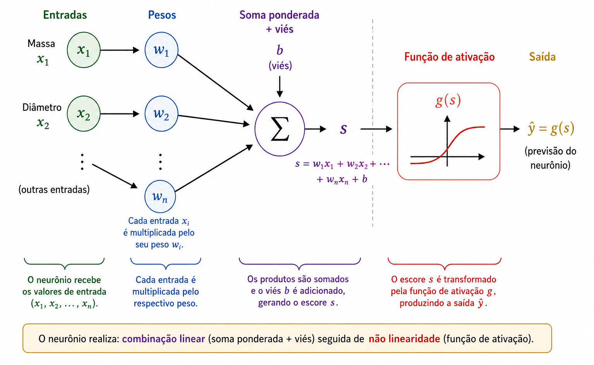
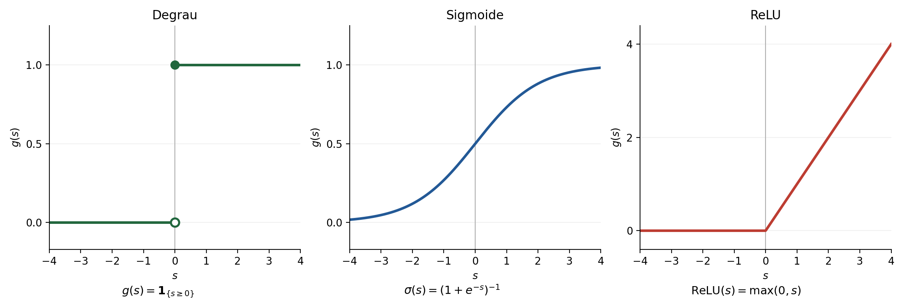
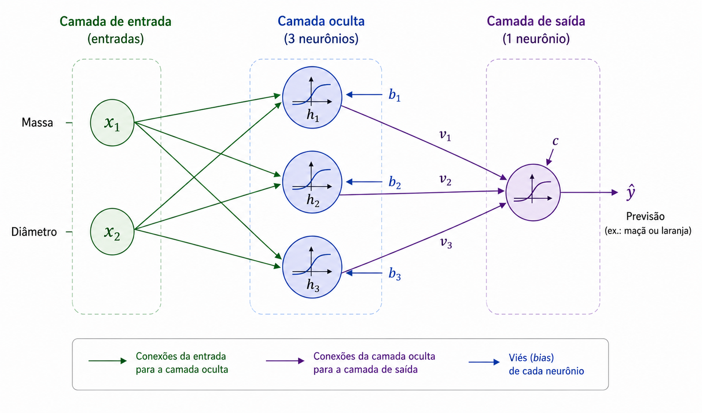
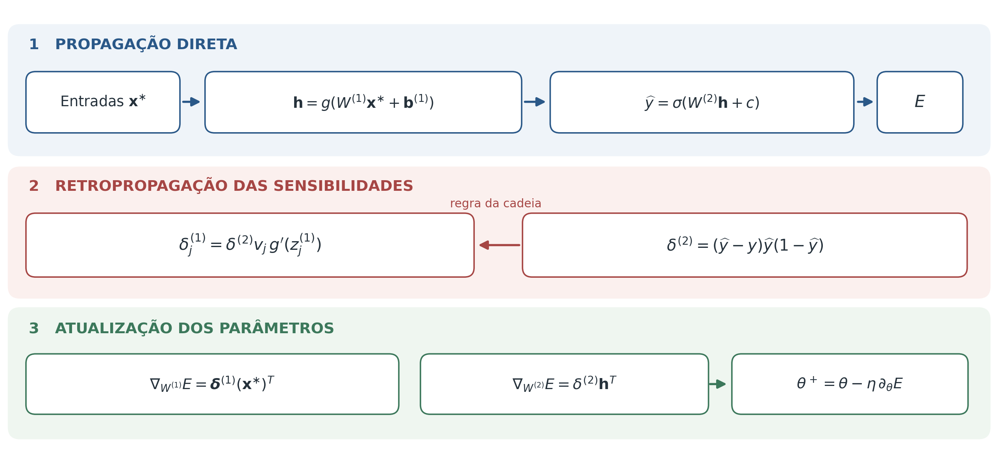
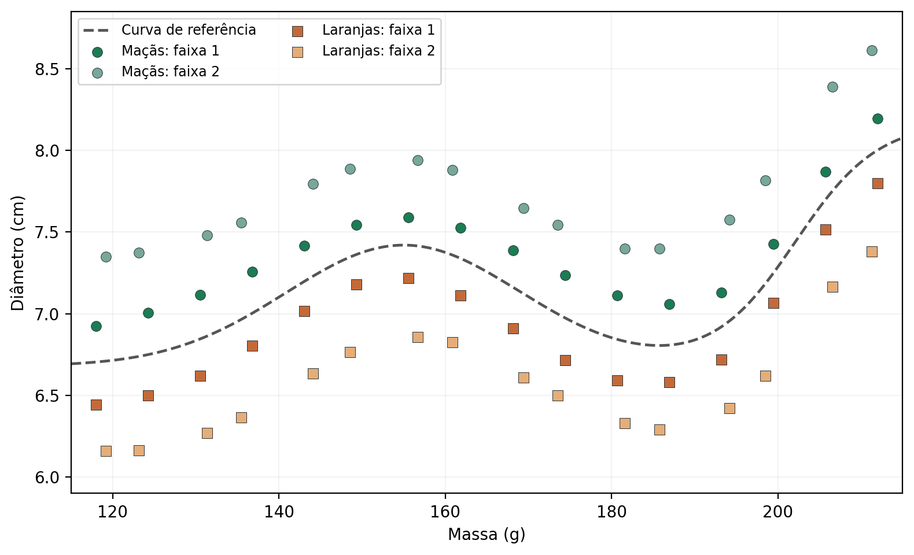
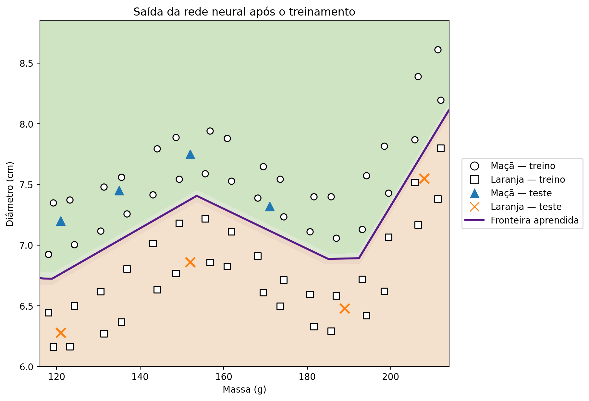

Quando um computador pode aprender?
Em nosso cotidiano, tomamos decisões de classificação quase sem perceber. Ao observar uma fruta, identificamos rapidamente se ela é uma maçã ou uma laranja; ao receber uma mensagem no celular, distinguimos uma conversa legítima de uma propaganda indesejada; na análise de exames, diferentes medidas podem ser combinadas para auxiliar uma decisão; e, em uma instituição financeira, diversas informações são avaliadas antes da concessão de crédito. Em todos esses exemplos, várias características são consideradas em conjunto para produzir uma resposta.
Em muitos programas tradicionais, as regras que conduzem a essa resposta são especificadas explicitamente pelo programador. Essa estratégia funciona bem quando as regras são conhecidas e podem ser descritas com clareza, mas se torna limitada quando os dados apresentam grande variabilidade ou quando não sabemos formular antecipadamente todas as condições necessárias para uma boa decisão. Surge então uma pergunta natural:
Seria possível construir um programa capaz de aprender uma regra de decisão
a partir de exemplos, em vez de recebê-la pronta?
Essa é uma das ideias centrais do aprendizado de máquina, área da Inteligência Artificial dedicada ao desenvolvimento de métodos que ajustam modelos a partir de dados [2, 3]. Em um problema de aprendizado supervisionado, fornecemos ao algoritmo exemplos acompanhados das respostas corretas e procuramos determinar um modelo capaz de produzir boas previsões também para casos que não participaram do treinamento. Entre os diversos modelos empregados para esse fim, as redes neurais artificiais adquiriram grande importância em aplicações como reconhecimento de imagens, processamento de linguagem, análise de sinais e previsão de séries temporais [7].
A utilização de redes neurais como tema de aproximação entre Matemática, computação e Educação Básica já foi discutida, no contexto da própria Professor de Matemática Online, por Batista e Martins [1], que apresentam uma proposta envolvendo formação de professores e reconhecimento de dígitos por meio de Python. O presente artigo segue um percurso complementar: nosso objetivo principal é explicitar a estrutura matemática interna de uma pequena rede neural, partindo da Geometria Analítica e chegando, passo a passo, ao cálculo dos gradientes e à implementação manual da retropropagação.
Apesar da sofisticação das aplicações atuais, a estrutura matemática fundamental de uma rede neural pode ser apresentada a partir de conceitos relativamente familiares. Em essência, uma rede neural é uma composição de funções cujos parâmetros são ajustados a partir dos dados. Partiremos de um problema geométrico simples, reinterpretaremos uma reta classificadora como um neurônio artificial, conectaremos vários neurônios, estudaremos o papel das funções de ativação e mostraremos como derivadas podem ser utilizadas para ajustar automaticamente os parâmetros da rede. Ao final, implementaremos em Python um pequeno exemplo completo de treinamento, estabelecendo uma correspondência direta entre as equações e o código.
Representando o problema matematicamente
Para compreender como uma rede neural funciona, começaremos com um problema deliberadamente simples: distinguir maçãs de laranjas. Uma fruta possui muitas características que poderiam ser utilizadas nessa tarefa, como cor, massa, diâmetro, textura e aroma. Entretanto, um modelo matemático inicial não precisa incorporar toda essa complexidade. Escolheremos apenas duas grandezas facilmente mensuráveis: a massa, expressa em gramas, e o diâmetro, expresso em centímetros.
Cada fruta será, portanto, representada por um par ordenado \[(x_1,x_2),\] em que \[x_1=\text{massa} \qquad\text{e}\qquad x_2=\text{diâmetro}.\]
Assim, o par \((155,\;7{,}2)\) representa uma fruta com massa de \(155\) g e diâmetro de \(7{,}2\) cm. Ao substituir o objeto físico por duas medidas numéricas, associamos cada fruta a um ponto do plano cartesiano: a primeira coordenada indica sua massa e a segunda, seu diâmetro. A Figura 1 ilustra essa representação para um conjunto hipotético de maçãs e laranjas.

Essa transformação altera a natureza aparente do problema. Em vez de perguntar diretamente como reconhecer uma maçã ou uma laranja, passamos a formular uma questão geométrica: como separar, no plano, os pontos correspondentes às duas classes? Essa mudança de perspectiva é fundamental em aprendizado de máquina. Imagens, textos, sons e sinais experimentais precisam ser convertidos em representações numéricas antes de serem processados por um algoritmo. No exemplo considerado, cada objeto é representado por apenas duas coordenadas; em aplicações reais, uma representação pode possuir centenas, milhares ou até milhões de componentes. O princípio, contudo, permanece o mesmo: cada exemplo é associado a um conjunto de números, e o modelo procura uma regra que relacione essa representação à resposta desejada.
Começaremos pela regra geométrica mais simples possível. Investigaremos se uma única reta pode separar adequadamente os pontos correspondentes às maçãs daqueles associados às laranjas.
Uma reta como classificador
Uma vez que cada fruta foi representada por um ponto do plano cartesiano, o problema de classificação pode ser formulado geometricamente: seria possível traçar uma reta que separasse as maçãs das laranjas? Essa pergunta expressa a ideia central de uma importante classe de métodos de aprendizado de máquina, os chamados classificadores lineares.
Considere uma reta que atravesse o conjunto de dados, como ilustra a Figura 2. Ela divide o plano em dois semiplanos. Se os pontos correspondentes às maçãs estiverem predominantemente de um lado e os pontos associados às laranjas estiverem do outro, a posição de uma nova fruta em relação à reta poderá ser utilizada como regra de classificação. Depois de medir sua massa e seu diâmetro, representamos a fruta por um ponto e verificamos em qual das duas regiões ele se encontra.

No plano cartesiano \((x_1,x_2)\), uma reta pode ser descrita por uma equação da forma
\[ w_1x_1+w_2x_2+b=0,\qquad(w_1,w_2)\neq(0,0).\tag{1}\]
O vetor \((w_1,w_2)\) é perpendicular à reta e, portanto, determina sua orientação, enquanto o parâmetro \(b\) contribui para determinar sua posição no plano. Há uma pequena redundância nessa representação: se multiplicarmos \(w_1\), \(w_2\) e \(b\) pelo mesmo número não nulo, obtemos exatamente a mesma reta. Assim, os parâmetros que descrevem a fronteira não são únicos. Além disso, a interpretação numérica dos pesos depende da escala das variáveis. Como a massa é expressa em gramas e o diâmetro em centímetros, os valores de \(w_1\) e \(w_2\) não devem ser comparados diretamente sem levar em conta essa diferença de unidades.
A própria equação da reta fornece uma maneira simples de determinar de qual lado da fronteira um ponto se encontra. Para isso, calculamos o escore
\[ s(x_1,x_2)=w_1x_1+w_2x_2+b.\tag{2}\]
Quando \(s(x_1,x_2)=0\), o ponto pertence à reta. Quando \(s(x_1,x_2)>0\), ele está em um dos semiplanos determinados por ela; quando \(s(x_1,x_2)<0\), está no semiplano oposto. Se convencionarmos que valores positivos correspondem a maçãs e valores negativos a laranjas, a regra de decisão pode ser escrita como
\[\begin{cases} s(x_1,x_2)\geq 0 & \Longrightarrow \text{maçã},\\ s(x_1,x_2)<0 & \Longrightarrow \text{laranja}. \end{cases}\]
Considere, por exemplo, a fronteira definida por
\[w_1=\frac{1}{10}, \qquad w_2=2, \qquad b=-30.\]
Para uma fruta com massa de \(160\) g e diâmetro de \(7{,}8\) cm, obtemos
\[\begin{aligned} s &=\frac{1}{10}\times160+2\times7{,}8-30\\ &=16+15{,}6-30\\ &=1{,}6. \end{aligned}\]
Como o escore é positivo, o ponto encontra-se no semiplano que, pela convenção adotada, corresponde às maçãs. O modelo classificaria, portanto, essa fruta como uma maçã.
Nem toda escolha de \(w_1\), \(w_2\) e \(b\) produz uma boa classificação. Algumas retas separam mal os dois grupos, enquanto outras cometem menos erros. O problema de aprendizagem consiste justamente em utilizar exemplos previamente classificados para determinar valores desses parâmetros que reduzam uma medida de erro do modelo. Em vez de programarmos diretamente a posição da reta, procuraremos fazer com que o algoritmo ajuste seus coeficientes a partir dos dados.
Uma única reta pode resolver satisfatoriamente problemas em que as classes são aproximadamente separáveis por uma fronteira linear. Entretanto, existem situações em que os pontos se distribuem de maneira mais complexa e nenhuma reta consegue distingui-los adequadamente. Antes de examinar como superar essa limitação, reinterpretaremos o classificador que acabamos de construir como uma unidade elementar de cálculo: o neurônio artificial.
O neurônio artificial
Na seção anterior, a expressão
\[s=w_1x_1+w_2x_2+b\] foi utilizada para determinar de que lado de uma reta se encontra o ponto que representa uma fruta. A mesma expressão pode ser interpretada como a primeira etapa do cálculo realizado por um neurônio artificial. O neurônio recebe números como entrada, combina-os por meio de pesos e de um viés e, em seguida, aplica uma função matemática para produzir uma saída.
No problema considerado, as entradas são a massa \(x_1\) e o diâmetro \(x_2\). Cada entrada é multiplicada por um parâmetro, chamado peso, e os produtos são somados ao termo constante \(b\), denominado viés.
Os pesos determinam como variações nas entradas afetam o escore. Se mantivermos \(x_2\) e os demais parâmetros fixos, uma variação \(\Delta x_1\) provoca uma variação \(w_1\Delta x_1\) em \(s\); analogamente, uma variação \(\Delta x_2\) provoca uma variação \(w_2\Delta x_2\). O sinal do peso também é relevante: um peso positivo faz com que o aumento da entrada aumente o escore, enquanto um peso negativo produz o efeito contrário. Essa interpretação deve ser feita com cuidado quando as variáveis possuem unidades e escalas muito diferentes. Por isso, em aplicações práticas, é comum normalizar ou padronizar os dados antes do treinamento.
O viés \(b\) é o termo constante da transformação afim. Geometricamente, ele permite deslocar a fronteira de decisão. Se \(b=0\), a equação \[w_1x_1+w_2x_2=0\] obriga a reta a passar pela origem. Com a presença do viés, a fronteira pode ocupar outras posições no plano. Outra maneira de interpretar esse parâmetro é observar que, quando \(x_1=x_2=0\), o escore assume o valor \(s=b\).
O escore não precisa ser a saída final do neurônio. Em geral, aplicamos a ele uma função de ativação, denotada por \(g\), e obtemos \[ \widehat{y}=g(s)=g\left(w_1x_1+w_2x_2+b\right).\tag{3}\]
Assim, o cálculo pode ser organizado em duas etapas: \[\begin{aligned} s &= w_1x_1+w_2x_2+b,\\[4pt] \widehat{y} &= g(s). \end{aligned}\]
Na primeira linha, as entradas passam por uma transformação afim; na segunda, o resultado é transformado pela função de ativação. A Figura 3 resume as duas operações.

Retomando os valores da seção anterior, encontramos \(s=1{,}6\). Se adotarmos a função degrau \[g(s)= \begin{cases} 1, & s\geq0,\\ 0, & s<0, \end{cases}\] então \(\widehat{y}=g(1{,}6)=1\). Pela convenção estabelecida, a fruta é classificada como maçã. Com essa função de ativação, a decisão muda quando \(s\) atravessa o valor zero; portanto, a fronteira entre as classes é exatamente \[w_1x_1+w_2x_2+b=0.\]
Um neurônio isolado é, assim, uma estrutura matemática simples, com parâmetros ajustáveis. Sua importância está na possibilidade de conectar várias unidades desse tipo. Antes de construirmos uma rede, porém, precisamos compreender por que a função de ativação é indispensável nessa composição.
Por que precisamos de uma função de ativação?
Um neurônio calcula primeiro um escore por meio de uma transformação afim e somente depois aplica uma função de ativação. Essa segunda etapa é fundamental para a capacidade de uma rede neural representar relações complexas. Para compreender por quê, imaginemos uma rede na qual nenhuma função de ativação seja utilizada. Nesse caso, a saída de cada unidade teria apenas a forma
\[y=w_1x_1+w_2x_2+b.\]
Suponha, para simplificar, que a saída de uma primeira unidade seja
\[h=ax+b\]
e que uma segunda unidade calcule
\[y=ch+d.\]
Substituindo a primeira expressão na segunda,
\[y=c(ax+b)+d=acx+(cb+d),\] que continua sendo uma função afim de \(x\). O mesmo princípio vale em várias dimensões: a composição de transformações afins continua sendo uma transformação afim. Portanto, acrescentar muitas camadas sem introduzir alguma operação não linear não torna a rede essencialmente mais expressiva; toda a composição poderia ser substituída por uma única transformação do mesmo tipo.
A função de ativação rompe essa limitação. Depois de calcular o escore \(s\), o neurônio aplica uma função geralmente não linear, \[h=g(s).\]
Com várias dessas unidades conectadas, a composição já não pode ser reduzida a uma única transformação afim. Isso permite construir fronteiras de decisão mais complexas.
A função de ativação mais simples é o degrau,
\[g(s)= \begin{cases} 1, & s\geq0,\\ 0, & s<0. \end{cases}\]
Ela produz uma decisão binária e é muito útil para compreender a ideia de classificação. Entretanto, sua derivada é nula para \(s\neq0\) e não existe em \(s=0\). Como o treinamento por métodos de gradiente utiliza derivadas para determinar como os parâmetros devem ser modificados, a função degrau não é adequada para esse tipo de treinamento.
Uma alternativa é a função sigmoide,
\[ \sigma(s)=\frac{1}{1+e^{-s}}.\tag{4}\]
Ela transforma qualquer número real em um valor estritamente compreendido entre \(0\) e \(1\). Para valores muito negativos de \(s\), a saída aproxima-se de \(0\); para valores muito positivos, aproxima-se de \(1\); entre esses extremos, a transição é suave. Além disso, a sigmoide é diferenciável em todos os pontos, com
\[\sigma'(s)=\sigma(s)\bigl(1-\sigma(s)\bigr).\]
Por produzir valores entre \(0\) e \(1\), ela é frequentemente utilizada na camada de saída de classificadores binários. Quando combinada com uma formulação probabilística e uma função de perda apropriada, sua saída pode ser interpretada como uma estimativa da probabilidade da classe representada por \(1\). Nas camadas internas, porém, a sigmoide pode apresentar uma dificuldade: para valores de grande módulo, sua derivada se aproxima de zero, o que pode contribuir para o chamado desaparecimento do gradiente (vanishing gradient) em redes profundas.
Uma função muito utilizada em camadas ocultas é a ReLU (Rectified Linear Unit), definida por
\[ \operatorname{ReLU}(s)=\max(0,s)= \begin{cases}0,&s<0,\\ s,&s\geq0.\end{cases}\tag{5}\]
Embora seja formada por dois trechos lineares, a ReLU não é uma função linear globalmente. Sua derivada vale \(0\) para \(s<0\) e \(1\) para \(s>0\); em \(s=0\), a derivada não existe no sentido usual e, nas implementações computacionais, adota-se uma convenção para o cálculo do gradiente. Para valores positivos, a derivada não diminui à medida que \(s\) cresce, o que evita um dos mecanismos de saturação presentes na sigmoide.
A Figura 4 reúne os gráficos das três funções e permite comparar visualmente seus comportamentos: o salto abrupto do degrau, a transição suave da sigmoide e a mudança de inclinação da ReLU.

As principais características podem ser resumidas na tabela a seguir.
| Função | Saída | Derivada | Uso típico |
|---|---|---|---|
| Degrau | \(\{0,1\}\) | Nula para \(s\neq0\); não existe em \(s=0\) | Modelos históricos e exemplos didáticos |
| Sigmoide | \((0,1)\) | Existe para todo \(s\) | Saída em classificação binária |
| ReLU | \([0,\infty)\) | \(0\) para \(s<0\) e \(1\) para \(s>0\) | Camadas ocultas |
As diferenças entre essas funções são importantes, mas o papel conceitual das ativações não lineares é comum: impedir que uma sequência de camadas seja reduzida a uma única transformação afim. É essa não linearidade que permitirá construir, na próxima seção, uma pequena rede com capacidade de representar relações mais complexas do que uma única reta.
Para o leitor que desejar aprofundar essas ideias, Haykin [5] apresenta uma exposição clássica das redes neurais, enquanto Goodfellow, Bengio e Courville [3] discutem as funções de ativação e o treinamento de redes profundas em um contexto mais amplo. O texto de Nielsen [8], disponível livremente na internet, constitui uma introdução particularmente acessível à relação entre neurônios, funções de ativação e aprendizagem. Higham e Higham [6] apresentam uma introdução às redes neurais voltada à Matemática Aplicada, enfatizando as conexões com Álgebra Linear, Cálculo e otimização.
Construindo uma pequena rede neural
Consideraremos agora uma rede formada por duas entradas, uma camada oculta com três neurônios e uma camada de saída com um neurônio. As entradas continuam sendo \[x_1=\text{massa}, \qquad x_2=\text{diâmetro},\] e são fornecidas simultaneamente aos três neurônios ocultos, como mostra a Figura 5.

Representaremos as saídas da camada oculta por \(h_1\), \(h_2\) e \(h_3\). Cada neurônio recebe as mesmas duas entradas, mas possui seus próprios pesos e seu próprio viés: \[\begin{aligned} h_1&=g\left(w_{11}x_1+w_{12}x_2+b_1\right),\\[4pt] h_2&=g\left(w_{21}x_1+w_{22}x_2+b_2\right),\\[4pt] h_3&=g\left(w_{31}x_1+w_{32}x_2+b_3\right). \end{aligned}\]
Embora os três neurônios recebam a mesma massa e o mesmo diâmetro, podem produzir respostas diferentes porque seus parâmetros são distintos. Durante o treinamento, esses parâmetros serão ajustados de modo que as ativações intermediárias se tornem úteis para a classificação.
As três quantidades \(h_1\), \(h_2\) e \(h_3\) são então encaminhadas ao neurônio da camada de saída, que calcula \[s_{\mathrm{out}}=v_1h_1+v_2h_2+v_3h_3+c\] e produz a previsão \[\widehat{y}=g_{\mathrm{out}}\left(s_{\mathrm{out}}\right).\]
Em nosso problema binário, utilizaremos a sigmoide na saída. Assim, \[\widehat{y}=\sigma\left(v_1h_1+v_2h_2+v_3h_3+c\right), \qquad 0<\widehat{y}<1.\]
Adotando \(y=1\) para maçã e \(y=0\) para laranja, podemos utilizar o limiar \(0{,}5\) para produzir uma decisão: \[\widehat{y}\geq0{,}5 \Longrightarrow \text{maçã}, \qquad \widehat{y}<0{,}5 \Longrightarrow \text{laranja}.\]
Valores próximos de \(1\) estão, portanto, fortemente associados à classe das maçãs, enquanto valores próximos de \(0\) estão associados à classe das laranjas. Como discutido anteriormente, interpretar numericamente \(\widehat{y}\) como uma probabilidade exige hipóteses adicionais sobre o modelo e seu treinamento; para a regra de classificação utilizada aqui, basta tratá-lo como a saída contínua da rede.
O aspecto central dessa arquitetura é a representação intermediária \[(x_1,x_2) \longrightarrow (h_1,h_2,h_3) \longrightarrow \widehat{y}.\]
A rede recebe duas características e constrói três novas quantidades antes de produzir a resposta final. Essas ativações não foram escolhidas manualmente: dependem dos pesos e vieses e, portanto, mudam à medida que os parâmetros são treinados.
Apesar de pequena, a rede já possui treze parâmetros ajustáveis. Os três neurônios ocultos possuem, ao todo, \[3(2+1)=9\] parâmetros, e o neurônio de saída acrescenta \[3+1=4.\]
Logo, \[9+4=13.\]
Essa contagem também pode ser entendida em notação matricial. Definindo \[\mathbf{x}= \begin{bmatrix} x_1\\x_2 \end{bmatrix}, \qquad W^{(1)}= \begin{bmatrix} w_{11}&w_{12}\\ w_{21}&w_{22}\\ w_{31}&w_{32} \end{bmatrix}, \qquad \mathbf{b}^{(1)}= \begin{bmatrix} b_1\\b_2\\b_3 \end{bmatrix},\] podemos escrever a camada oculta de forma compacta como \[ \mathbf{h}=g\left(W^{(1)}\mathbf{x}+\mathbf{b}^{(1)}\right),\tag{6}\] em que \(g\) é aplicada componente a componente. Para a saída, \[ \widehat{y}=\sigma\left(W^{(2)}\mathbf{h}+b^{(2)}\right),\tag{7}\] com \[W^{(2)}= \begin{bmatrix} v_1&v_2&v_3 \end{bmatrix}.\]
Nas próximas seções, usaremos \(g=\operatorname{ReLU}\) na camada oculta e sigmoide na saída. Essa escrita antecipa a forma que aparecerá no programa em Python. Quando uma fruta é apresentada à entrada e calculamos sucessivamente as ativações até obter \(\widehat{y}\), realizamos a propagação direta (forward propagation). Resta agora responder à questão central: como determinar automaticamente os treze parâmetros para que as previsões se tornem adequadas aos dados?
Como uma rede neural aprende?
Os pesos e vieses da rede não são conhecidos antecipadamente: são ajustados a partir de exemplos com classes conhecidas. A aprendizagem consiste em repetir a propagação direta, o cálculo da perda, a determinação dos gradientes e a atualização dos parâmetros (Figura 6). O ponto essencial é que a regra da cadeia permite calcular quanto cada peso e cada viés contribuem para uma pequena variação da perda.
Para ajustar os parâmetros, precisamos primeiro de uma medida numérica que indique quão distante está a previsão da resposta esperada. Essa medida é a função de perda: ela associa uma penalidade a cada previsão e permite comparar diferentes escolhas de pesos e vieses. Ao contrário de simplesmente contar classificações incorretas, uma perda contínua distingue previsões mais ou menos próximas do rótulo e fornece derivadas para orientar o treinamento.
Considere uma fruta com massa \(140\) g e diâmetro \(7{,}0\) cm, identificada como laranja (\(y=0\)). Denotando por \(\widehat y\in(0,1)\) a saída da rede, utilizaremos a perda quadrática de um exemplo \[ E=\frac12(\widehat y-y)^2.\tag{8}\] Nessa expressão, \(y\) é a classe verdadeira e \(\widehat y\) é a previsão. A perda é não negativa e se aproxima de zero à medida que \(\widehat y\) se aproxima do rótulo \(y\); quanto maior a diferença \(|\widehat y-y|\), maior a penalidade. Por exemplo, para uma laranja, previsões de \(0{,}80\) e \(0{,}60\) produzem, respectivamente, \(E=0{,}32\) e \(E=0{,}18\). Ambas classificam incorretamente a fruta como maçã pelo limiar \(0{,}5\), mas a perda distingue a previsão que está mais próxima do valor esperado. O fator \(1/2\) não altera o mínimo da função, mas simplifica sua derivada.
Como a rede deve aprender a partir de muitos exemplos, e não de uma única fruta, combinamos as perdas individuais. Para \(N\) observações, definimos a perda média \[ J=\frac1N\sum_{i=1}^{N}E_i.\tag{9}\] Essa média sintetiza o desempenho no conjunto de treinamento e constitui a função que procuramos reduzir ajustando os parâmetros da rede. Minimizar \(J\) não garante, por si só, boas previsões em dados novos; essa questão será retomada ao discutirmos generalização. Adotaremos (8) para a dedução principal, pela simplicidade algébrica. Mais adiante, compararemos seu gradiente com aquele da entropia cruzada binária, sem alterar o experimento computacional [2, 3].

Se \(\theta\) representa um peso ou um viés, a derivada \(\partial J/\partial\theta\) mede a sensibilidade local da perda média a esse parâmetro. Um passo de descida do gradiente é dado por \[ \theta_{\mathrm{novo}}=\theta_{\mathrm{antigo}}-\eta\frac{\partial J}{\partial\theta},\qquad \eta>0.\tag{10}\] A taxa de aprendizagem \(\eta\) controla o passo: valores muito pequenos podem retardar a convergência, enquanto valores excessivos podem gerar oscilações ou divergência. Quando os parâmetros são atualizados após cada observação, como no código da Seção 8, substitui-se \(\partial J/\partial\theta\) por \(\partial E_i/\partial\theta\). Essa é a forma de descida do gradiente estocástica (SGD) adotada neste trabalho.
A regra da cadeia na rede 2–3–1
Utilizaremos a rede da Figura 5, com ReLU nos três neurônios ocultos e sigmoide na saída. Como as entradas representam massa (em gramas) e diâmetro (em centímetros), seus valores numéricos têm escalas distintas. Para que essa diferença de unidades não prejudique o condicionamento do ajuste, transformamos cada característica em \(x_j^{\ast}=(x_j-\mu_j)/\sigma_j\), em que \(\mu_j\) e \(\sigma_j>0\) são, respectivamente, a média e o desvio padrão adotados como referência. Assim, obtemos entradas adimensionais e de escalas comparáveis, o que facilita a escolha do passo de otimização. No treinamento computacional, essas estatísticas são calculadas apenas com o conjunto de treinamento, evitando influência dos dados de teste. No exemplo numérico a seguir, usaremos centros e escalas fixados apenas para simplificar as contas. Para entradas já padronizadas \(\mathbf{x}^{\ast}=(x_1^{\ast},x_2^{\ast})^{\mathsf T}\), a propagação direta é \[ \begin{aligned} \mathbf{z}^{(1)}&=W^{(1)}\mathbf{x}^{\ast}+\mathbf{b}^{(1)}, &\mathbf{h}&=\operatorname{ReLU}(\mathbf{z}^{(1)}),\\ z^{(2)}&=W^{(2)}\mathbf{h}+c, &\widehat y&=\sigma(z^{(2)}). \end{aligned}\tag{11}\] Aqui, \(c=b^{(2)}\) é o viés de saída, e \(W^{(2)}=(v_1,v_2,v_3)\). A retropropagação começa no neurônio de saída, aplicando sucessivamente a regra da cadeia: \[ \begin{aligned} \delta^{(2)}:=\frac{\partial E}{\partial z^{(2)}} &=\underbrace{\frac{\partial E}{\partial\widehat y}}_{\widehat y-y} \underbrace{\frac{\partial\widehat y}{\partial z^{(2)}}}_{\widehat y(1-\widehat y)} =(\widehat y-y)\widehat y(1-\widehat y),\\ \frac{\partial E}{\partial v_j}&=\delta^{(2)}h_j, \qquad \frac{\partial E}{\partial c}=\delta^{(2)}. \end{aligned}\tag{12}\] Como cada ativação \(h_j\) também depende de seus pesos e de seu viés, calculamos as sensibilidades dos neurônios ocultos: \[ \begin{aligned} \delta_j^{(1)}:=\frac{\partial E}{\partial z_j^{(1)}} &=\delta^{(2)}v_j\,\operatorname{ReLU}'(z_j^{(1)}),\\ \frac{\partial E}{\partial w_{jk}} &=\delta_j^{(1)}x_k^{\ast},\qquad \frac{\partial E}{\partial b_j}=\delta_j^{(1)}. \end{aligned}\tag{13}\] A ReLU não é diferenciável em zero; nos pontos em que isso ocorrer, adotaremos \(\operatorname{ReLU}'(0)=0\) como convenção computacional. As quantidades \(\delta^{(2)}\) e \(\delta_j^{(1)}\) são sensibilidades locais da perda, não “erros físicos” que percorrem a rede. A implementação reusa essas quantidades para calcular os treze gradientes sem repetir toda a diferenciação para cada peso.
Uma atualização numérica completa
Para manter as contas legíveis, adotaremos, apenas neste exemplo, os centros e as escalas de referência \(160\) g e \(20\) g para a massa, e \(7{,}5\) cm e \(0{,}5\) cm para o diâmetro. Assim, a fruta \((140\,\mathrm{g},7{,}0\,\mathrm{cm})\) corresponde às entradas adimensionais \[ \mathbf{x}^{\ast}=\begin{bmatrix}(140-160)/20\\(7{,}0-7{,}5)/0{,}5\end{bmatrix} =\begin{bmatrix}-1\\-1\end{bmatrix}.\tag{14}\] Essas referências foram fixadas para a demonstração; na Seção 8, a média e o desvio padrão serão calculados diretamente do conjunto de treinamento.
Escolhemos os treze parâmetros iniciais \[ W^{(1)}=\begin{bmatrix} 0{,}2&0{,}1\\-0{,}3&0{,}2\\0{,}1&-0{,}4 \end{bmatrix},\quad \mathbf{b}^{(1)}=\begin{bmatrix}\phantom{-}0{,}5\\\phantom{-}0{,}2\\-0{,}5\end{bmatrix},\quad W^{(2)}=\begin{bmatrix}\phantom{-}0{,}5&-0{,}4&\phantom{-}0{,}3\end{bmatrix},\quad c=1.\tag{15}\] A Equação (11) fornece, sucessivamente, \[ \begin{gathered} \mathbf{z}^{(1)}=(0{,}2,\;0{,}3,\;-0{,}2)^{\mathsf T},\qquad \mathbf{h}=(0{,}2,\;0{,}3,\;0)^{\mathsf T},\\ z^{(2)}=0{,}5(0{,}2)-0{,}4(0{,}3)+1=0{,}98,\\ \widehat y=\sigma(0{,}98)\simeq0{,}727108,\qquad E\simeq0{,}264343. \end{gathered}\tag{16}\] A previsão inicial corresponde à classe errada. Pelas Equações (12) e (13), \[ \begin{gathered} \delta^{(2)}\simeq0{,}144274,\qquad \boldsymbol{\delta}^{(1)}\simeq(0{,}072137,\;-0{,}057710,\;0)^{\mathsf T},\\ \frac{\partial E}{\partial W^{(2)}}\simeq (0{,}028855,\;0{,}043282,\;0),\qquad \frac{\partial E}{\partial W^{(1)}}\simeq \begin{bmatrix}-0{,}072137&-0{,}072137\\\phantom{-}0{,}057710&\phantom{-}0{,}057710\\\phantom{-}0&\phantom{-}0\end{bmatrix}. \end{gathered}\tag{17}\] O terceiro neurônio oculto está inativo (\(z_3^{(1)}<0\)), logo seus pesos e viés têm gradiente nulo neste passo. Com \(\eta=0{,}05\), aplicamos \(\theta_{\mathrm{novo}}=\theta_{\mathrm{antigo}}-0{,}05\,\partial E/\partial\theta\) simultaneamente a todos os parâmetros. A Tabela 1 explicita algumas das treze atualizações; as demais seguem exatamente as mesmas fórmulas.
| Parâmetro \(\theta\) | Inicial | \(\partial E/\partial\theta\) | Atualizado |
|---|---|---|---|
| \(v_1\) | \(0{,}500000\) | \(0{,}028855\) | \(0{,}498557\) |
| \(v_2\) | \(-0{,}400000\) | \(0{,}043282\) | \(-0{,}402164\) |
| \(c\) | \(1{,}000000\) | \(0{,}144274\) | \(0{,}992786\) |
| \(w_{11}\) | \(0{,}200000\) | \(-0{,}072137\) | \(0{,}203607\) |
| \(w_{21}\) | \(-0{,}300000\) | \(0{,}057710\) | \(-0{,}302885\) |
| \(b_1\) | \(0{,}500000\) | \(0{,}072137\) | \(0{,}496393\) |
| \(w_{31}\) | \(0{,}100000\) | \(0\) | \(0{,}100000\) |
Uma nova propagação direta, agora com todos os parâmetros atualizados, produz \(\widehat y_{\mathrm{novo}}\simeq0{,}723717\) e \(E_{\mathrm{novo}}\simeq0{,}261883\): a perda diminuiu em um único passo. A classificação ainda não mudou, o que é esperado; a aprendizagem depende da repetição desse processo em muitos exemplos e épocas.
Erro quadrático e entropia cruzada
O erro quadrático é conveniente para explicitar a regra da cadeia, mas, em classificação binária com saída sigmoide, também é comum utilizar a entropia cruzada binária. Para \(y\in\{0,1\}\) e \(\widehat y=\sigma(z)\), a perda de uma observação é \[ E_{\mathrm{EC}}=-y\ln\widehat y-(1-y)\ln(1-\widehat y).\tag{18}\] Enquanto a perda quadrática penaliza a diferença numérica entre previsão e rótulo, a entropia cruzada penaliza previsões que atribuem baixa probabilidade ao rótulo observado, interpretando \(\widehat y\) como probabilidade da classe \(1\). A distinção mais importante para o treinamento aparece ao derivar em relação ao escore \(z\) do neurônio de saída. Aplicando a regra da cadeia e usando \(\sigma'(z)=\widehat y(1-\widehat y)\), obtemos \[ \begin{aligned} \frac{\partial E_{\mathrm{EC}}}{\partial z} &=\left(-\frac{y}{\widehat y}+\frac{1-y}{1-\widehat y}\right) \widehat y(1-\widehat y) =\widehat y-y,\\ \frac{\partial E_{\mathrm{EQ}}}{\partial z} &=(\widehat y-y)\widehat y(1-\widehat y), \qquad E_{\mathrm{EQ}}=\tfrac12(\widehat y-y)^2. \end{aligned}\tag{19}\]
Para ilustrar apenas essa diferença, suponha uma previsão \(\widehat y=0{,}80\) para uma laranja (\(y=0\)). Nesse caso, \(E_{\mathrm{EQ}}=0{,}32\) e \(E_{\mathrm{EC}}=-\ln(0{,}20)\simeq1{,}60944\), enquanto as derivadas em relação a \(z\) são, respectivamente, \(0{,}128\) e \(0{,}80\). Com \(\eta=0{,}05\), a atualização isolada do viés de saída, cujo gradiente é \(\partial E/\partial c=\partial E/\partial z\), seria \(\Delta c=-0{,}0064\) com erro quadrático ou \(\Delta c=-0{,}0400\) com entropia cruzada. Esta previsão ilustrativa de \(0{,}80\) não substitui os valores calculados no exemplo completo anterior.
Na entropia cruzada, o fator \(\widehat y(1-\widehat y)\) deixa de multiplicar a sensibilidade da camada de saída. Isso evita, nessa camada, o amortecimento do gradiente causado pela saturação da sigmoide quando uma previsão está muito errada. Não elimina gradientes pequenos em outras camadas e tampouco garante treinamento mais rápido em qualquer situação. Como as perdas têm escalas diferentes, seus valores numéricos não devem ser comparados diretamente como medidas de qualidade. Manteremos o erro quadrático no código principal, para que os cálculos da atualização anterior permaneçam integralmente reprodutíveis; o notebook suplementar inclui a comparação sem modificar o treinamento.
Épocas e generalização
Uma passagem completa pelos exemplos de treinamento é denominada época. A implementação da seção seguinte embaralha os exemplos em cada época e atualiza os parâmetros após cada fruta. A arquitetura permanece fixa, mas pesos, vieses e fronteira de decisão mudam. Reduzir a perda no treinamento, porém, não garante desempenho satisfatório em observações novas. Essa capacidade é chamada de generalização; quando o ajuste excessivo aos exemplos prejudica novas previsões, ocorre sobreajuste. Em estudos mais amplos, conjuntos separados de treinamento, validação e teste permitem escolher hiperparâmetros e avaliar o modelo de forma menos enviesada [2, 3].
Da Matemática ao Python
Implementaremos agora, apenas com NumPy, a propagação direta, a regra da cadeia e a atualização estocástica derivadas na Seção 7 [4]. Para destacar uma fronteira não linear, ampliaremos a camada oculta de três para doze neurônios ReLU. A rede \(2\)–\(12\)–\(1\) resultante possui \(12(2+1)+(12+1)=49\) parâmetros, mas utiliza exatamente as mesmas equações.
Dados sintéticos para uma demonstração
O experimento emprega \(64\) exemplos artificiais de treinamento, distribuídos em quatro faixas de \(16\) pontos no plano massa–diâmetro, e oito observações adicionais para teste meramente ilustrativo. As duas faixas de maçãs situam-se acima de uma curva de referência; as duas de laranjas, abaixo. Pequenos deslocamentos determinísticos evitam faixas perfeitamente regulares. Os valores foram escolhidos apenas para produzir uma distribuição visualmente plausível e uma fronteira de decisão não linear; não são medidas experimentais nem representam um modelo físico de frutas.
A curva de referência é usada exclusivamente para fabricar os exemplos. Ela não é fornecida à rede, não aparece na função de perda e não participa da retropropagação. O treinamento utiliza somente os pares massa–diâmetro e seus rótulos. Para permitir a reprodução exata do conjunto ilustrado na Figura 7, a fórmula geradora e os deslocamentos são registrados no Apêndice A.

A Figura 7 mostra os pontos efetivamente produzidos por construir_dados(); a curva tracejada é somente um recurso da construção sintética, não uma fronteira aprendida. Os oito exemplos adicionais são utilizados apenas na ilustração final e não participam do cálculo das estatísticas de padronização.
Padronização e escolhas de treinamento
Como massa e diâmetro possuem unidades e escalas diferentes, cada entrada é convertida em uma variável adimensional: \[ x_j^{\ast}=\frac{x_j-\mu_j}{\sigma_j},\quad \mu_j=\frac1N\sum_{i=1}^N x_{ij},\quad \sigma_j=\sqrt{\frac1N\sum_{i=1}^N(x_{ij}-\mu_j)^2}.\tag{20}\] A média \(\mu_j\) centraliza a característica \(j\) e o desvio padrão \(\sigma_j\) a reescala; \(N=64\) neste exemplo. Ambas as estatísticas são calculadas somente com o conjunto de treinamento e depois aplicadas sem alterações aos dados de teste. O procedimento pressupõe \(\sigma_j>0\). A mesma transformação é empregada antes da rede e na geração da malha de previsão.
Os pesos são inicializados com valores de uma distribuição normal de média zero e desvio padrão \(0{,}1\), usando a semente \(42\). Valores pequenos quebram a simetria entre neurônios ocultos; a distribuição normal é uma opção simples, mas não uma regra universal. Em redes maiores, a escala de inicialização deve considerar a arquitetura e a ativação. Os vieses começam em zero. No ponto \(s=0\), a ReLU não possui derivada; a função relu_derivada adota o valor zero por convenção, sem modificar a definição matemática da função e sem garantir, por si só, a convergência do algoritmo.
Utilizamos \(\eta=0{,}05\) como escolha conservadora, não como taxa ótima. Um teste de sensibilidade simples, mantendo semente e dados fixos, fornece a Tabela 2, após \(1000\) épocas. A taxa maior testada convergiu mais rapidamente neste conjunto, mas essa observação não determina sua adequação geral. Mantemos \(0{,}05\) por fornecer treinamento estável e um histórico de perda facilmente inspecionável.
| \(\eta\) | Perda média \(J\) | Acertos em \(64\) exemplos |
|---|---|---|
| \(0{,}005\) | \(0{,}041871\) | \(55\) |
| \(0{,}05\) | \(0{,}006485\) | \(64\) |
| \(0{,}2\) | \(0{,}000106\) | \(64\) |
Implementação integral em Python
O programa completo é apresentado nos Códigos 1–10, organizados por função e na ordem de execução. Os dez blocos compõem o arquivo codigo_rede_neural.py, também disponibilizado como material suplementar.
Código 1 — Preparação do ambiente
"""Exemplo didático: classificação de frutas por uma rede 2-12-1.
Dependências: numpy e matplotlib. Executar: python codigo_rede_neural.py.
"""
import numpy as np
import matplotlib.pyplot as plt
from matplotlib.lines import Line2D
Código 2 — Ativação ReLU
def relu(s):
"""Ativação da camada oculta: ReLU(s) = max(0,s)."""
return np.maximum(0, s)
Código 3 — Gradiente computacional da ReLU
def relu_derivada(s):
# Em s=0 a ReLU não é derivável; adotamos derivada computacional 0.
# A convenção define apenas o passo de retropropagação nesse ponto.
return (s > 0).astype(float)
Código 4 — Ativação sigmoide
def sigmoid(s):
"""Ativação da saída, com valores entre 0 e 1."""
return 1 / (1 + np.exp(-s))
Código 5 — Curva auxiliar de geração de dados
def fronteira_base(m):
# Curva artificial em cm: nível + ressalto gaussiano + subida logística.
# As constantes foram escolhidas para criar uma fronteira não linear;
# não resultam de medidas experimentais nem de ajuste aos dados.
return (6.68 + 0.74*np.exp(-((m-155)/20)**2)
+ 1.50/(1 + np.exp(-(m-202)/5)))
Código 6 — Exemplos sintéticos de treinamento e teste ilustrativo
def construir_dados():
# 16 massas em cada uma das quatro faixas: a1, a2, l1, l2.
massas_1 = np.linspace(118, 212, 16)
# Pequenos deslocamentos determinísticos evitam massas idênticas.
massas_2 = massas_1 + np.array([
1.2, -1.1, 0.8, -1.3, 1.0, -0.8, 1.1, -1.0,
1.3, -0.9, 0.9, -1.2, 1.0, -1.0, 0.8, -0.7
])
k = np.arange(16)
# Maçãs: duas faixas acima da curva, com oscilações pequenas em cm.
a1 = np.column_stack([
massas_1,
fronteira_base(massas_1) + 0.22 + 0.05*np.sin(0.8*k)
])
a2 = np.column_stack([
massas_2,
fronteira_base(massas_2) + 0.58 + 0.06*np.cos(0.45*k)
])
# Laranjas: duas faixas abaixo da curva de referência.
l1 = np.column_stack([
massas_1,
fronteira_base(massas_1) - (0.22 + 0.04*np.cos(0.7*k))
])
l2 = np.column_stack([
massas_2,
fronteira_base(massas_2) - (0.55 + 0.05*np.sin(0.5*k))
])
X_treino = np.vstack([a1, a2, l1, l2])
y_treino = np.array([1.0]*32 + [0.0]*32)
# Oito exemplos ilustrativos; não constituem teste estatístico amplo.
X_teste = np.array([
[121.0, 7.20], [135.0, 7.45],
[152.0, 7.75], [171.0, 7.32],
[121.0, 6.28], [152.0, 6.86],
[189.0, 6.48], [208.0, 7.55]
])
y_teste = np.array([1, 1, 1, 1, 0, 0, 0, 0], dtype=float)
return X_treino, y_treino, X_teste, y_teste
Código 7 — Previsões por propagação direta
def prever(X, media, desvio, W1, b1, W2, b2):
# x_j^* = (x_j - mu_j)/sigma_j, usando estatísticas do treino.
Xn = (X - media) / desvio
# Propagação direta em notação matricial (uma linha por fruta).
h = relu(Xn @ W1.T + b1)
return sigmoid(h @ W2 + b2)
Código 8 — Treinamento por retropropagação e descida do gradiente
def treinar(Xn, y_treino, eta=0.05, n_epocas=6000, semente=42):
rng = np.random.default_rng(semente)
# Pesos aleatórios pequenos quebram simetria entre os neurônios;
# vieses iniciais zero. A escala 0.1 é uma escolha didática.
W1 = 0.1 * rng.standard_normal((12, 2))
b1 = np.zeros(12)
W2 = 0.1 * rng.standard_normal(12)
b2 = 0.0
historico = []
for epoca in range(n_epocas):
# SGD: uma atualização por fruta, em ordem embaralhada a cada época.
for i in rng.permutation(len(Xn)):
x, alvo = Xn[i], y_treino[i]
# Propagação direta: eqs. da camada oculta e da saída.
z1 = W1 @ x + b1
h = relu(z1)
z2 = W2 @ h + b2
y_hat = sigmoid(z2)
# Retropropagação: delta2 = dE/dz2 (erro quadrático).
delta2 = (y_hat - alvo) * y_hat * (1 - y_hat)
dW2, db2 = delta2 * h, delta2
# delta1_j = delta2 * W2_j * ReLU'(z1_j).
delta1 = (delta2 * W2) * relu_derivada(z1)
dW1 = np.outer(delta1, x)
db1 = delta1
# Descida estocástica: theta <- theta - eta*dE/dtheta.
# Todos os gradientes usam os parâmetros ANTERIORES.
W1 -= eta * dW1
b1 -= eta * db1
W2 -= eta * dW2
b2 -= eta * db2
# J: perda média do conjunto ao final de cada época.
h_todos = relu(Xn @ W1.T + b1)
y_prev = sigmoid(h_todos @ W2 + b2)
historico.append(np.mean(0.5 * (y_treino - y_prev)**2))
return W1, b1, W2, b2, np.array(historico)
Código 9 — Visualização da fronteira aprendida
def gerar_figura(X_treino, y_treino, X_teste, y_teste,
media, desvio, W1, b1, W2, b2, salvar=None):
# Curva de nível y_hat=0.5: fronteira de decisão APRENDIDA.
massas = np.linspace(116, 214, 500)
diametros = np.linspace(6.0, 8.85, 500)
M, D = np.meshgrid(massas, diametros)
grade = np.column_stack([M.ravel(), D.ravel()])
P = prever(grade, media, desvio, W1, b1, W2, b2).reshape(M.shape)
fig, ax = plt.subplots(figsize=(9.2, 6.3))
ax.contourf(M, D, P, levels=[0, 0.25, 0.50, 0.75, 1],
colors=['#f3e0cb', '#ecd5c4', '#dbe7cf', '#cde3bf'],
alpha=0.95)
ax.contour(M, D, P, levels=[0.5], colors=['#5a1a8a'],
linewidths=2.2)
mask = y_treino == 1.0
ax.scatter(X_treino[mask, 0], X_treino[mask, 1], marker='o',
s=48, facecolors='white', edgecolors='black', linewidths=1.1)
mask = y_treino == 0.0
ax.scatter(X_treino[mask, 0], X_treino[mask, 1], marker='s',
s=48, facecolors='white', edgecolors='black', linewidths=1.1)
mask = y_teste == 1.0
ax.scatter(X_teste[mask, 0], X_teste[mask, 1], marker='^',
s=92, color='#1f77b4')
mask = y_teste == 0.0
ax.scatter(X_teste[mask, 0], X_teste[mask, 1], marker='x',
s=110, color='#ff7f0e', linewidths=2.0)
ax.set_xlabel('Massa (g)')
ax.set_ylabel('Diâmetro (cm)')
ax.set_title('Saída da rede neural após o treinamento')
handles = [
Line2D([0], [0], marker='o', markersize=9, markerfacecolor='white',
markeredgecolor='black', linestyle='None',
label='Maçã - treino'),
Line2D([0], [0], marker='s', markersize=9, markerfacecolor='white',
markeredgecolor='black', linestyle='None',
label='Laranja - treino'),
Line2D([0], [0], marker='^', markersize=9, color='#1f77b4',
linestyle='None', label='Maçã - teste'),
Line2D([0], [0], marker='x', markersize=10, color='#ff7f0e',
linestyle='None', label='Laranja - teste'),
Line2D([0], [0], color='#5a1a8a', linewidth=2.2,
label='Fronteira aprendida')
]
ax.legend(handles=handles, loc='center left',
bbox_to_anchor=(1.02, 0.5), frameon=True)
fig.tight_layout()
if salvar:
fig.savefig(salvar, dpi=200, bbox_inches='tight')
return fig, ax
Código 10 — Execução do experimento
if __name__ == '__main__':
X_treino, y_treino, X_teste, y_teste = construir_dados()
media, desvio = X_treino.mean(axis=0), X_treino.std(axis=0)
Xn = (X_treino - media) / desvio
W1, b1, W2, b2, historico = treinar(Xn, y_treino)
p_treino = prever(X_treino, media, desvio, W1, b1, W2, b2)
p_teste = prever(X_teste, media, desvio, W1, b1, W2, b2)
print('Perda média final:', historico[-1])
print('Acertos treino:', np.sum((p_treino >= 0.5) == y_treino), '/64')
print('Acertos teste ilustrativo:',
np.sum((p_teste >= 0.5) == y_teste), '/8')
gerar_figura(X_treino, y_treino, X_teste, y_teste,
media, desvio, W1, b1, W2, b2)
plt.show()
A função construir_dados() (Código 6) implementa apenas a fabricação dos exemplos sintéticos documentada no Apêndice A; a curva auxiliar não participa da otimização. A função treinar() (Código 8) contém a propagação direta, o cálculo de \(\delta^{(2)}\) e \(\boldsymbol\delta^{(1)}\), os gradientes e as quatro atualizações dos parâmetros, correspondentes às Equações (11), (12), (13) e (10). Os gradientes são obtidos antes de modificar qualquer parâmetro. A função gerar_figura() (Código 9) desenha o resultado obtido, não a curva usada para criar os dados.
O programa está disponível também como arquivo Python independente e como notebook executável, para facilitar a reprodução e a adaptação dos experimentos.
Com \(6000\) épocas, semente \(42\) e \(\eta=0{,}05\), a execução produz perda média final \(J\simeq1{,}786\times10^{-4}\) e classifica corretamente os \(64\) exemplos de treinamento e os oito exemplos adicionais. Trata-se de verificação computacional de um exemplo sintético, não de uma estimativa estatística de capacidade de generalização. A Figura 8 representa a fronteira aprendida, definida pela curva de nível \(\widehat y=0{,}5\); círculos e quadrados indicam treinamento, e triângulos e cruzes indicam teste ilustrativo.

Começamos o artigo com uma reta capaz de separar dois conjuntos simples de pontos e terminamos com um exemplo computacional mais rico, em que uma fronteira sinuosa surge do ajuste automático dos parâmetros da rede. A implementação não acrescenta nenhum elemento misterioso às ideias matemáticas discutidas ao longo do texto: ela apenas organiza e repete, em grande escala e com grande velocidade, combinações lineares, funções de ativação, derivadas, produtos matriciais e atualizações por descida do gradiente [3, 8].
O programa Python e o notebook executável acompanham os arquivos suplementares desta versão. O portal https://neuralmath.org reúne recursos didáticos associados ao tema.
Apêndice A — Construção do conjunto sintético
As expressões deste apêndice documentam somente uma escolha ad hoc de geração de dados para o exercício computacional. Não fazem parte da arquitetura, da função de perda, nem do algoritmo de treinamento da rede neural. Nenhuma informação sobre a curva é utilizada nas atualizações dos pesos e vieses.
Para massas \(m\) inseridas numericamente em gramas, definimos uma curva auxiliar de diâmetro, em centímetros, por \[ d_0(m)=6{,}68+0{,}74\exp\!\left[-\left(\frac{m-155}{20}\right)^2\right] +\frac{1{,}50}{1+\exp[-(m-202)/5]}.\tag{21}\] O primeiro termo desloca verticalmente a curva; o segundo gera uma elevação próxima de \(155\) g; e o terceiro produz uma subida suave em torno de \(202\) g. Todos os coeficientes foram escolhidos por conveniência visual, sem ajuste a observações de frutas.
Para \(k=0,\ldots,15\), tomamos \(m_k=118+(212-118)k/15\) em gramas. Um segundo conjunto de massas é obtido por \(\widetilde m_k=m_k+\varepsilon_k\), com \(\varepsilon_k\) igual à sequência, em gramas, \[
(1{,}2,-1{,}1,0{,}8,-1{,}3,1{,}0,-0{,}8,1{,}1,-1{,}0,
1{,}3,-0{,}9,0{,}9,-1{,}2,1{,}0,-1{,}0,0{,}8,-0{,}7).\tag{22}\] Os diâmetros das quatro faixas são calculados por \[
\begin{aligned}
d_{a1,k}&=d_0(m_k)+0{,}22+0{,}05\sin(0{,}8k),\\
d_{a2,k}&=d_0(\widetilde m_k)+0{,}58+0{,}06\cos(0{,}45k),\\
d_{l1,k}&=d_0(m_k)-\bigl[0{,}22+0{,}04\cos(0{,}7k)\bigr],\\
d_{l2,k}&=d_0(\widetilde m_k)-\bigl[0{,}55+0{,}05\sin(0{,}5k)\bigr].
\end{aligned}\tag{23}\] As amplitudes verticais são medidas em centímetros. As funções trigonométricas evitam alinhamentos excessivamente regulares; não representam uma periodicidade física, ruído estocástico ou um modelo generativo aprendido. O código suplementar construir_dados() implementa exatamente essas expressões. Os oito pares adicionais destinados à ilustração de teste são especificados diretamente nesse código.
As funções fronteira_base() e construir_dados() (Códigos 5 e 6) implementam exatamente as Equações (21)–(23), sem utilizar a curva auxiliar como informação de treinamento. O programa completo está reproduzido na Seção 8, em blocos consecutivos, e também acompanha os arquivos suplementares para execução direta.